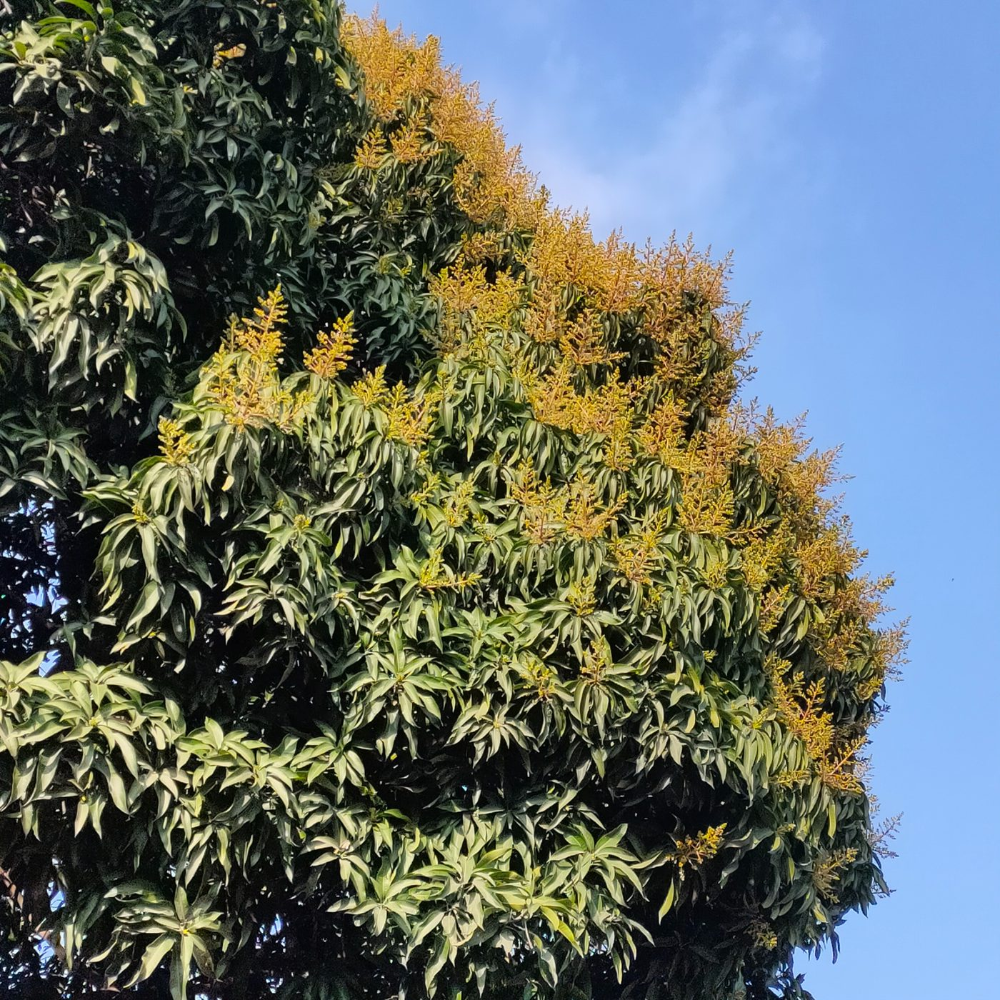
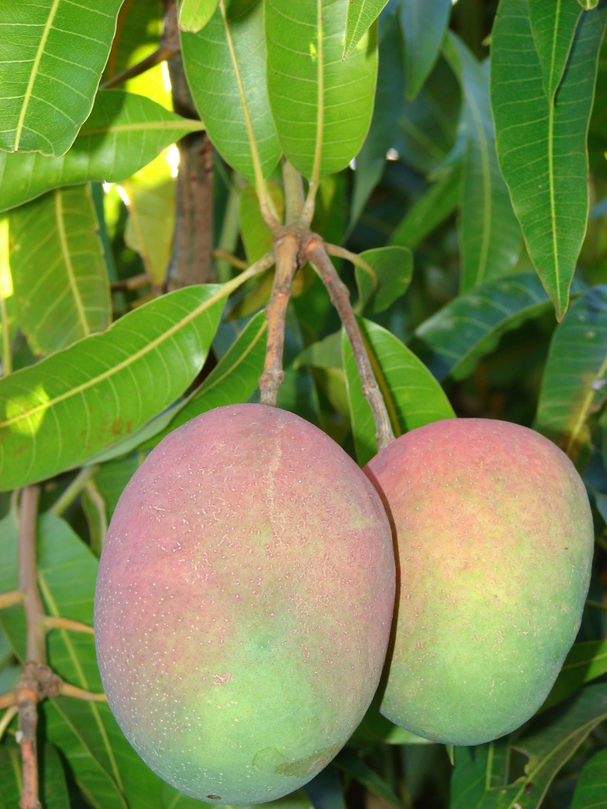
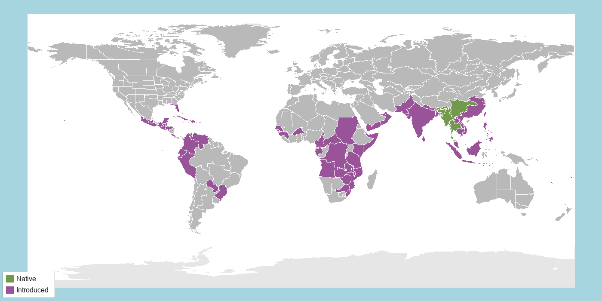

AIdentifying Features
Mango is a large evergreen tree, reaching 10–40 m in wild forest-grown trees, with a single stout trunk and a dense, rounded crown. The bark is dark grey-brown, thick, and rough with vertical fissures; cut bark or twigs weep a whitish, irritant sap. Leaves are simple, spirally arranged, and leathery — oblong-lanceolate, 15–35 cm long, with an entire (untoothed) margin and a prominent midrib. New leaves emerge coppery-pink to reddish before hardening into the glossy, deep-green, aromatic mature leaf (Kostermans & Bompard, 1993).
Flowers are small, yellowish-white to pinkish, and packed by the hundreds to thousands into large, branched, terminal flower clusters up to 60 cm long; a single cluster carries both male and hermaphrodite flowers together. The fruit is a large fleshy drupe, oval to kidney-shaped, ripening from green to yellow, orange, or red depending on the variety, with a single large flattened, fibrous seed embedded in sweet, aromatic orange flesh.

Canopy view showing the spirally arranged leaves and branched terminal flower panicles.
Source: India Biodiversity Portal, observation 42c940ab-0fa4-4d45-827f-71cc4156fa3a.

Ripening mango fruit — a large fleshy drupe with a single fibrous seed.
Photo: Forest & Kim Starr (2007), Wikimedia Commons, CC BY 3.0
BHabitat & Range
Mango's wild ancestral populations are native to the Indo-Burma region — northeastern India (Assam), Myanmar, and adjacent parts of southern China — with a secondary center of diversity across peninsular India and mainland Southeast Asia (Warschefsky & von Wettberg, 2019). Genomic evidence points to at least two largely independent domestication histories, roughly 4,000 years ago, giving rise to distinct "Indian type" and "Southeast Asian type" mango populations that are still genetically distinguishable today.
In the wild, mango grows as a scattered, low-density tree of tropical lowland rainforest on well-drained soils, from sea level up to roughly 1,200 m. It thrives under the monsoon tropics but needs a distinct dry season of at least three months to trigger flowering. Because of this, and because of millennia of cultivation, mango is now grown pantropically across South and Southeast Asia, Africa, the Americas, and Australia — making truly wild, forest-grown trees far harder to find today than cultivated ones.

Native range (green) vs. introduced/naturalized range (purple).
Distribution data: POWO, 2025. Region boundaries: TDWG WGSRPD Level 3 (Brummitt, 2001).
CBiology & Ecology
☀️ Photosynthetic Pathway
Mango uses standard C3 photosynthesis. Its evergreen canopy captures light year-round, but photosynthetic capacity varies markedly with canopy position, elevation, and light intensity, reflecting the strong light gradients typical of a rainforest tree — sun-exposed outer leaves build higher leaf mass per area and higher photosynthetic capacity than shaded inner-canopy leaves, and whole-tree carbon gain depends heavily on how light filters down through the dense, multi-layered crown (Wubshet et al., 2021; Cheesman et al., 2025; Jung et al., 2018). This leaf-by-leaf flexibility, rather than a specialized C4 or CAM pathway, is what lets a single large tree cope with the deep shade of its own lower canopy while still exploiting the abundant, year-round light of the tropical rainforest canopy above.
💧 Resource Acquisition Strategy
Strategy — mining phosphorus through a fungal partnership. Phosphorus is one of the scarcest, least mobile nutrients in tropical soils, and mango obtains it largely by trading sugars for nutrients with arbuscular mycorrhizal fungi (AMF), which measurably improve phosphorus uptake and growth in the field (Mohandas, 2012).
Structures. Mango develops a deep taproot and an extensive lateral root system, but the key organs here are microscopic: AMF colonize the root cortex and extend a vast network of thread-like extraradical hyphae far beyond the root's own nutrient-depletion zone, effectively enlarging the tree's absorptive reach many times over.
Ecosystem-scale cycling. Those hyphae reach immobile phosphorus that roots alone cannot, and in doing so they reshape phosphorus and nitrogen cycling in the surrounding soil — stimulating a hyphosphere microbiome that mineralizes organic phosphorus and speeds nutrient turnover (Wang et al., 2023; Han et al., 2025). Because the tree pays its fungal partners in photosynthetically fixed carbon, the symbiosis also channels a share of the tree's carbon underground, where fungal hyphae and dead fungal tissue feed the soil organic-carbon pool (Han et al., 2025).
Impact on other species. A single fungal network commonly links many plants at once, so a mycorrhizal mango can be physically connected to its neighbors underground, sharing a nutrient-trading system; the improved soil aggregation and nutrient availability that the fungi create benefit the wider orchard or forest community, not just the individual tree.
🌸 Reproductive Strategy
Sexual, asexual, or both? Both. Mango reproduces sexually through insect-pollinated flowers, but many cultivars are also polyembryonic: alongside the single fertilized (zygotic) embryo, extra embryos grow asexually from the mother's own nucellar tissue in the seed, producing seedlings that are exact clones of the parent tree — a natural form of apomixis (Yadav et al., 2023). Sexual reproduction predominates in wild and single-embryo ("monoembryonic") types and generates new variation, while the asexual nucellar route is common in polyembryonic cultivars and is prized horticulturally for producing true-to-type rootstocks.
Pollinators. Yes. Mango carries hundreds of small flowers — a mix of male and perfect (hermaphrodite) flowers — in large branched panicles, and depends on insects to move pollen. The main pollinators are flies, especially hoverflies, with some bees, wasps, and other insects also contributing; the flowers attract them with a mild scent and easily accessible nectar rather than large showy petals, and no single pollinator species is exclusive to mango (Ramírez & Davenport, 2016; Nurul Huda et al., 2015).
Fertilization. Many cultivars are self-incompatible or strongly favor pollen from a different tree, so cross-pollination is the norm. Once a compatible pollen grain is deposited on the stigma, it grows a pollen tube down the short style to the flower's single ovule, where fertilization occurs (Pérez et al., 2016).
Seeds & dispersal. Each flower that sets fruit produces one large seed encased in a fleshy drupe — the mango itself. The sweet pulp is a dispersal reward: fruit bats and other mammals feed on it and carry the seed away from the parent tree (Singaravelan & Marimuthu, 2008), and several thousand years of human cultivation have since dispersed mango across the tropics worldwide.
🐝 Species Interactions
The interaction — a mutualism with weaver ants. Across mango's tropical range, weaver ants (Oecophylla) stitch living leaves together into nests in the canopy and aggressively patrol the entire tree. As they forage, they hunt down and drive off many of mango's worst pests — fruit flies, red-banded thrips, seed weevils, and plant-sucking bugs (Peng & Christian, 2004; Van Mele et al., 2007).
How it helps the plant. Trees occupied by strong weaver-ant colonies suffer far less damage to their shoots and fruit, and set more flower panicles and clean fruit, than trees without them — in field trials the ants controlled pests about as effectively as chemical insecticides (Peng & Christian, 2004). By slashing pest damage, the ants boost the tree's growth and, above all, its reproductive success (more surviving fruit and seed). Mango can grow without the ants, so the partnership is not strictly essential, but where the ants are present it substantially raises the tree's fitness.
Impact on the other species (+). Positive for the ants: the tree supplies them with nesting leaves, foraging territory, and a steady supply of insect prey — a classic mutualism. (The pest insects the ants remove, of course, are affected negatively.)
References for this Species
APA 7 format. Sources used for text are listed first; image sources follow and do not count toward the per-species source minimum. Full running list, organized by species, also appears on the References page.
- Kostermans, A. J. G. H., & Bompard, J. M. (1993). The mangoes: Their botany, nomenclature, horticulture and utilization. Academic Press / IBPGR.
- Mohandas, S. (2012). Arbuscular mycorrhizal fungi benefit mango (Mangifera indica L.) plant growth in the field. Scientia Horticulturae, 143, 43–48. https://doi.org/10.1016/j.scienta.2012.05.030 Peer-reviewed
- Nurul Huda, A., Che Salmah, M. R., Abu Hassan, A., Hamdan, A., & Abdul Razak, M. N. (2015). Pollination services of mango flower pollinators. Journal of Insect Science, 15(1), Article 113. https://doi.org/10.1093/jisesa/iev090 Peer-reviewed
- Ramírez, F., & Davenport, T. L. (2016). Mango (Mangifera indica L.) pollination: A review. Scientia Horticulturae, 203, 158–168. https://doi.org/10.1016/j.scienta.2016.03.011 Peer-reviewed
- Singaravelan, N., & Marimuthu, G. (2008). In situ feeding tactics of short-nosed fruit bat (Cynopterus sphinx) on mango fruits: Evidence of extractive foraging in a flying mammal. Journal of Ethology, 26, 1–7. https://doi.org/10.1007/s10164-007-0044-1 Peer-reviewed
- Warschefsky, E. J., & von Wettberg, E. J. B. (2019). Population genomic analysis of mango (Mangifera indica) suggests a complex history of domestication. New Phytologist, 222(4), 2023–2037. https://doi.org/10.1111/nph.15731 Peer-reviewed
- Wubshet, T. T., Wang, Z., Yang, J., Chen, H., Schaefer, D. A., Goldberg, S. D., Mortimer, P. E., Lu, P., & Xu, J. (2021). Effect of elevation on photosynthesis of young mango (Mangifera indica L.) trees. Photosynthetica, 59(4), 508–516. https://doi.org/10.32615/ps.2021.040 Peer-reviewed
- Cheesman, A. W., Middleby, K. B., Orr, R., Han, L., Rossouw, G., & Cernusak, L. A. (2025). Acclimation of mango (Mangifera indica cv. Calypso) to canopy light gradients—scaling from leaf to canopy. Tree Physiology, 45(10), Article tpaf109. https://doi.org/10.1093/treephys/tpaf109 Peer-reviewed
- Jung, D. H., Lee, J. W., Kang, W. H., Hwang, I. H., & Son, J. E. (2018). Estimation of whole plant photosynthetic rate of Irwin mango under artificial and natural lights using a three-dimensional plant model and ray-tracing. International Journal of Molecular Sciences, 19(1), Article 152. https://doi.org/10.3390/ijms19010152 Peer-reviewed
- Wang, G., Jin, Z., George, T. S., Feng, G., & Zhang, L. (2023). Arbuscular mycorrhizal fungi enhance plant phosphorus uptake through stimulating hyphosphere soil microbiome functional profiles for phosphorus turnover. New Phytologist, 238(6), 2578–2593. https://doi.org/10.1111/nph.18772 Peer-reviewed
- Han, Y., Yuan, G., Yang, X., Fang, L., Liang, Y., Zhou, B., & Wei, Z. (2025). Arbuscular mycorrhizal fungi enhance soil nutrient cycling by regulating soil bacterial community structures in mango orchards with different soil fertility rates. Frontiers in Microbiology, 16, Article 1615694. https://doi.org/10.3389/fmicb.2025.1615694 Peer-reviewed
- Pérez, V., Herrero, M., & Hormaza, J. I. (2016). Self-fertility and preferential cross-fertilization in mango (Mangifera indica). Scientia Horticulturae, 213, 373–378. https://doi.org/10.1016/j.scienta.2016.10.034 Peer-reviewed
- Yadav, C. B., Rozen, A., Eshed, R., Ish-Shalom, M., Faigenboim, A., Dillon, N., Bally, I., Webb, M., Kuhn, D., Ophir, R., Cohen, Y., & Sherman, A. (2023). Promoter insertion leads to polyembryony in mango—A case of convergent evolution with citrus. Horticulture Research, 10(12), Article uhad227. https://doi.org/10.1093/hr/uhad227 Peer-reviewed
- Peng, R. K., & Christian, K. (2004). The weaver ant, Oecophylla smaragdina (Hymenoptera: Formicidae), an effective biological control agent of the red-banded thrips, Selenothrips rubrocinctus (Thysanoptera: Thripidae) in mango crops in the Northern Territory of Australia. International Journal of Pest Management, 50(2), 107–114. https://doi.org/10.1080/09670870410001658125 Peer-reviewed
- Van Mele, P., Vayssières, J.-F., Van Tellingen, E., & Vrolijks, J. (2007). Effects of an African weaver ant, Oecophylla longinoda, in controlling mango fruit flies (Diptera: Tephritidae) in Benin. Journal of Economic Entomology, 100(3), 695–701. https://doi.org/10.1093/jee/100.3.695 Peer-reviewed
- Claude. (2026). Assistance with brainstorming and synthesizing information for Photosynthetic Pathways [Large language model]. Anthropic. https://claude.ai
- Claude. (2026). Assistance with brainstorming and synthesizing information for Resource Acquisition Strategies [Large language model]. Anthropic. https://claude.ai
- Claude. (2026). Assistance with brainstorming and synthesizing information for Reproductive Strategies [Large language model]. Anthropic. https://claude.ai
- Claude. (2026). Assistance with brainstorming and synthesizing information for Species Interactions [Large language model]. Anthropic. https://claude.ai
Image & map sources (not counted toward the per-species source minimum):
- B.navez. (2005). Mangifera indica [Photograph]. Wikimedia Commons. https://commons.wikimedia.org/wiki/File:Mangifera_indica.JPG. CC BY-SA 3.0.
- Starr, F., & Starr, K. (2007). Starr 071024-0216 Mangifera indica [Photograph]. Wikimedia Commons. https://commons.wikimedia.org/wiki/File:Starr_071024-0216_Mangifera_indica.jpg. CC BY 3.0.
- POWO. (2025). Mangifera indica L. In Plants of the World Online. Royal Botanic Gardens, Kew. Retrieved July 15, 2026, from https://powo.science.kew.org/taxon/urn:lsid:ipni.org:names:69913-1. Distribution data CC BY 3.0.
- Harvey, J. (2008). BlankMap-World-Equirectangular [Map]. Wikimedia Commons. https://commons.wikimedia.org/wiki/File:BlankMap-World-Equirectangular.svg. CC0 (public domain). Used as basemap.
- India Biodiversity Portal. (2022). Mangifera indica L. [Photograph, observation 42c940ab-0fa4-4d45-827f-71cc4156fa3a]. https://indiabiodiversity.org/species/show/33485. Shared under India Biodiversity Portal's Creative Commons attribution terms.